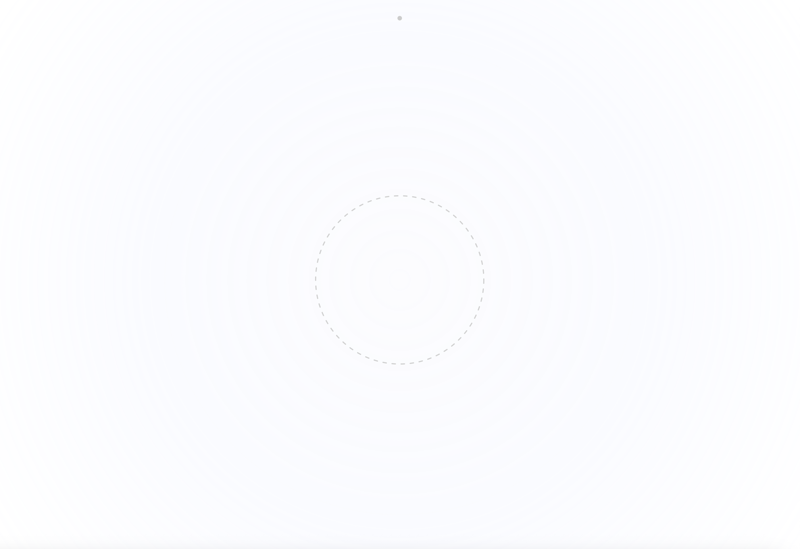
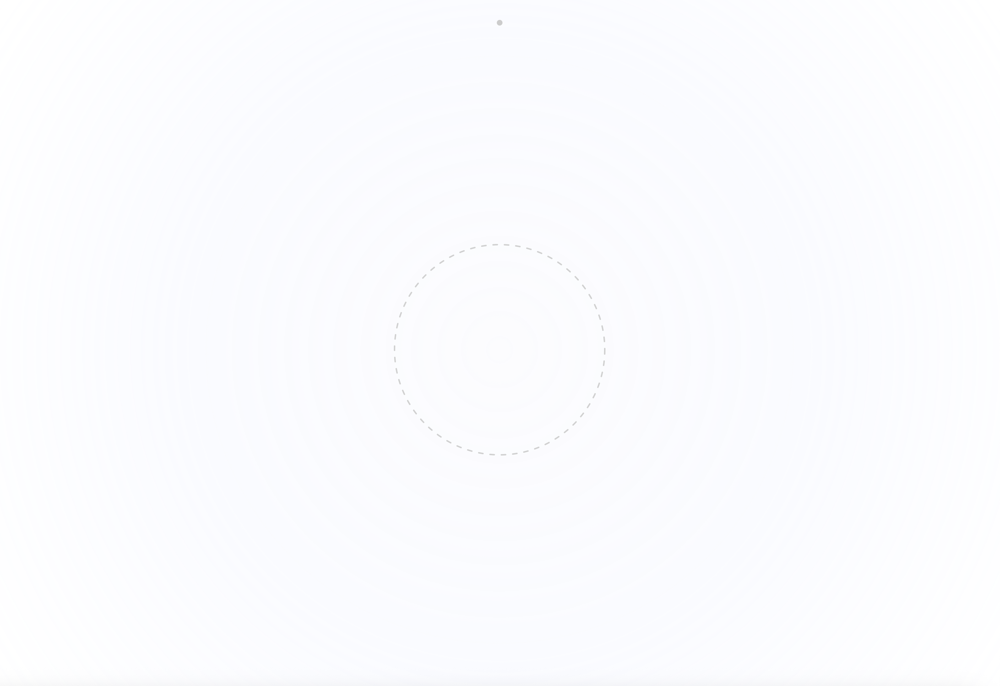

Time is a project that explores how time can be measured, represented, and experienced by creating a physical or digital time-based system.
Leantime is an interactive, shared earphone clock. Two people each wear one side of the earphones. At first, they hear ticking sounds at different tempos, one faster, the other slower, representing two separate timelines. As they face the same direction and physically lean against each other, the tempos gradually synchronize. Fragmented musical stems then layer together, forming a complete song. When they move apart, the harmony breaks and the music fades.
Leantime expresses the process of two people becoming lovers. Although they begin as individuals with different rhythms, time gradually brings them into alignment. The act of sharing earphones, a small gesture of care, is reinterpreted as physically leaning on one another, turning emotional closeness into a shared experience of time.


 
